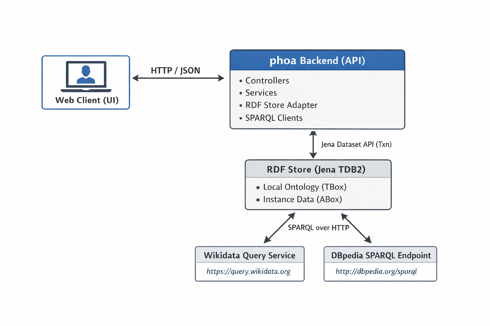
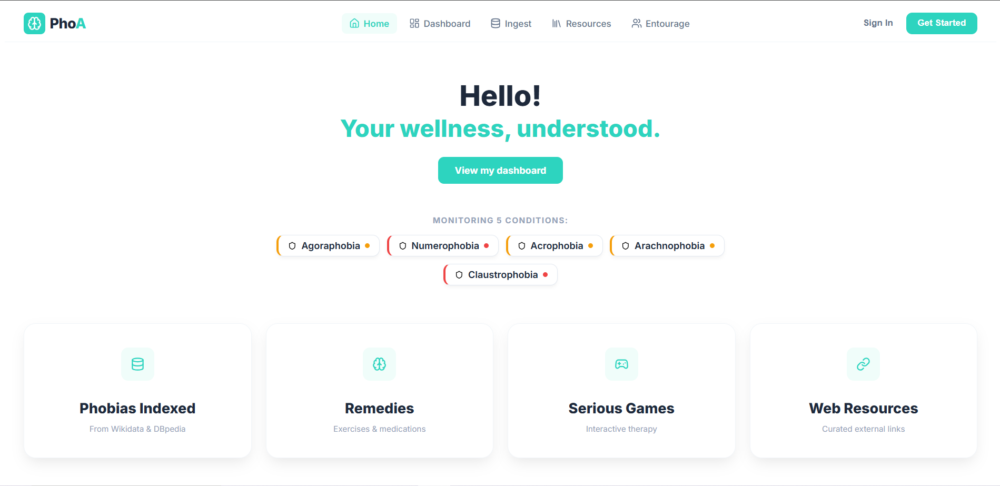
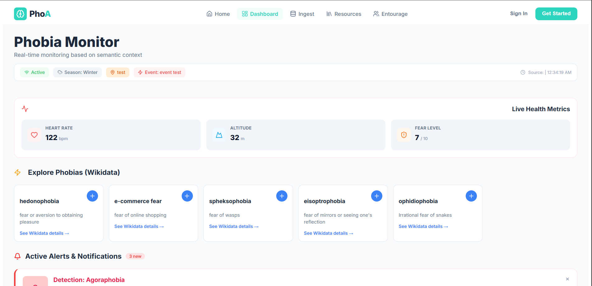
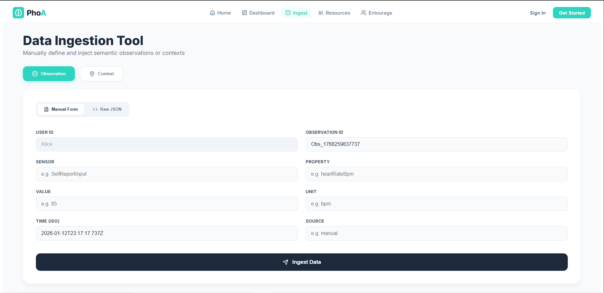
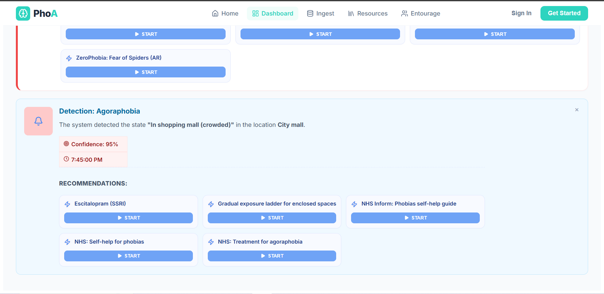
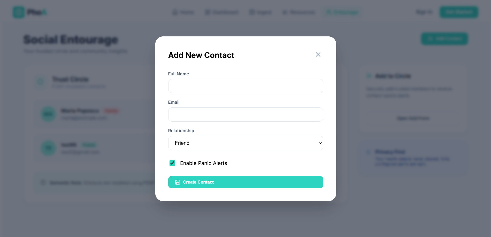
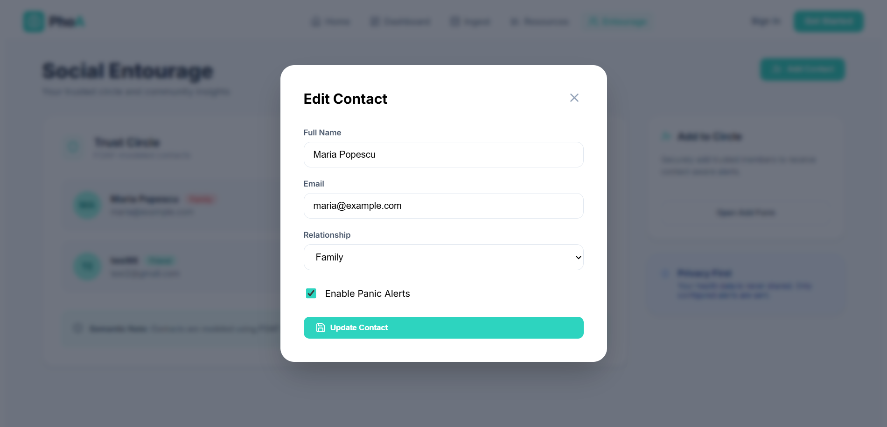
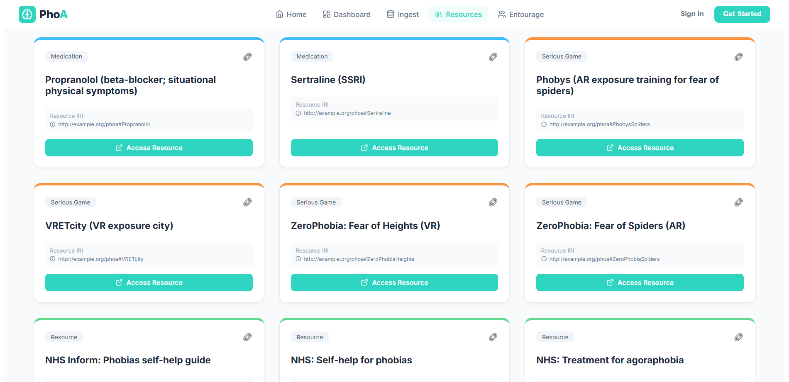

This report documents the backend of the Phoa Web application with emphasis on (i) internal data structures and models, (ii) the implemented HTTP API and its architectural placement, (iii) the RDF-based knowledge model used for representing domain concepts and user-related facts, and (iv) the pragmatic integration of external Linked Open Data sources such as Wikidata and DBpedia via SPARQL queries. The system adopts Semantic Web standards—RDF for data representation and SPARQL for querying—alongside a conventional web backend stack. Persistent RDF storage is handled through an RDF dataset store (Apache Jena TDB2) and is accessed transactionally using Jena’s transaction patterns. Finally, the solution is evaluated with respect to Linked Data principles, emphasizing URI-based identification, dereferenceability, and interlinking with external datasets.
The Phoa backend is a Java-based web service organized as a Maven project and structured as a typical backend codebase (build descriptor, source tree, and resources). It exposes a set of HTTP endpoints for domain operations such as discovering domain concepts (e.g., phobias), attaching them to users, ingesting user observations and context, and retrieving computed or aggregated information for the frontend.
The backend sits between a web client and two classes of data sources:

Figure 1 — Web backend architecture with internal RDF persistence and external SPARQL endpoints.
The backend uses an RDF-first internal data model: core application state is stored as RDF triples inside a transactional dataset (Apache Jena + TDB2). The HTTP layer exchanges JSON DTOs, but the authoritative persistence model is the RDF graph itself. This design makes the schema flexible (new properties/classes can be added without a relational migration) while still enabling strong integrity via SHACL validation during ingestion.
All reads and writes are executed against a Jena Dataset. Mutations are performed only inside write
transactions, and read-only operations are performed inside read transactions (typically through Jena’s
Txn helpers). This transactional pattern avoids partial updates and ensures consistent query results
under concurrency.
On startup, the store component initializes the dataset and loads the ontology Turtle file
(phobia_model.ttl) into the default model within a write transaction. This bootstraps both the TBox
(classes/properties) and seeded ABox individuals (example phobias, interventions) before the API is used.
The application uses a dedicated namespace for minting local URIs:
phoa: = http://example.org/phoa#. Local URIs are minted for users, per-user phobia
afflictions, contexts, notifications, and for concept resources that do not yet exist locally.
When a local resource corresponds to an external entity (e.g., Wikidata/DBpedia), the model stores explicit links
using alignment predicates (notably skos:exactMatch, plus support for owl:sameAs and
schema:sameAs). This enables later enrichment and supports Linked Data interlinking.
A central modelling choice is to represent the user–phobia association through a reified node
phoa:PhobiaAffliction rather than a single direct link. Concretely:
phoa:User → phoa:hasPhobiaAffliction → phoa:PhobiaAfflictionphoa:PhobiaAffliction → phoa:phobiaType → phoa:Phobiaphoa:PhobiaAffliction stores per-user attributes: phoa:afflictionStart,
optional phoa:afflictionEnd, and phoa:severity (defaulted to a mid value if missing).
If a phobia concept does not exist locally, the backend creates it on demand by minting a local URI derived from the
phobia label (slugified), typing it as phoa:Phobia, adding rdfs:label, and linking it to the
provided Wikidata URI using skos:exactMatch. This “local cache + external identity” pattern keeps the
local graph self-contained while remaining externally aligned.
Contexts are stored as individuals of phoa:Context attached to a user via phoa:hasContext.
Contexts capture situational metadata with optional substructures:
phoa:contextTime → a Time node holding time:inXSDDateTimephoa:contextEvent → schema:Event (with schema:name)phoa:contextLocation → schema:Place (with schema:name) and optional schema:geo lat/lonphoa:contextSeason → phoa:Season (label via rdfs:label)phoa:reportedBy → phoa:DataSource (label via rdfs:label)phoa:addressed) is used to track whether a context has been processed.
Observations are represented using the SOSA ontology to standardize the representation of measured or reported values.
A user links to observations via phoa:hasObservation, and each sosa:Observation records:
sosa:observedProperty (URI of the observed feature)sosa:hasSimpleResult (literal value)sosa:resultTime (xsd:dateTime)sosa:madeBySensor and optional schema:unitText
Interventions are modeled as individuals under classes transitively subclassing phoa:Intervention.
The ontology includes specialized intervention categories:
phoa:MedicationRecommendation, phoa:ExerciseRecommendation,
phoa:SeriousGameRecommendation, and phoa:WebResourceRecommendation.
Interventions include labels (rdfs:label) and links (schema:url or phoa:youtubeLink).
Phobia concepts can point to suggested interventions via phoa:recommendedIntervention.
This allows the backend to retrieve “what to do next” content purely through RDF queries, without hardcoding logic
into the application layer.
Notifications are stored as phoa:Notification individuals. They may include:
phoa:notifiedUser, schema:dateCreated, phoa:confidence,
phoa:status, and optional links to phoa:detectedPhobia,
phoa:notificationContext, and phoa:deliveredIntervention.
Query logic filters read vs unread notifications and can join across linked context and intervention resources.
The system stores a user’s support network as FOAF persons. A user links to contacts using
phoa:hasEntourageContact, and each foaf:Person can store:
foaf:name, foaf:mbox, plus application-level attributes such as
phoa:relationship and phoa:alertsEnabled.
The ingest pipeline constructs RDF statements in a temporary model and validates them using SHACL before committing them to the persistent dataset. If validation fails, ingestion is rejected and an explicit SHACL validation report (serialized as Turtle) is provided. This combines RDF’s schema flexibility with enforceable constraints, ensuring that only conformant graphs become part of the application state.
Using RDF as the internal data model yields a uniform representation for user profiles, temporal context, sensor-like observations, interventions, and notifications. It also enables rich SPARQL queries (joins across context/event/place, hierarchy traversal for interventions, unread notification retrieval) and provides a natural path to Linked Data integration through explicit external links and standard vocabulary reuse.
The backend exposes a RESTful HTTP API. JSON is used for the public application endpoints (DTO-based request/response payloads). In addition, the implementation provides developer-facing diagnostic endpoints that can output RDF content (notably Turtle) and SHACL validation reports, which is useful for inspecting and validating the live RDF dataset.
Endpoints are grouped by responsibility (ingestion, concept discovery/enrichment, interventions, notifications, administration, and debugging). Table 1 summarizes the routes that are directly visible in the provided controller sources.
| Controller | Method | Path | Request DTO | Response DTO / type | Technical notes |
|---|---|---|---|---|---|
| IngestController | POST | /api/context |
ContextRequest |
JSON map (includes created URI) | Creates a phoa:Context subgraph (time/event/place/season/source), validated before commit. |
| IngestController | POST | /api/observations |
ObservationRequest |
JSON map (includes created URI) | Creates a sosa:Observation linked to the user; stores sensor, observedProperty, result, unit, time, source. |
| UsersController | GET | /api/users/{userLocalName}/notifications?limit=200 |
- | List of notification summaries (JSON) | Lists notifications for a user; query logic filters out status "read". |
| UsersController | POST | /api/users/{userLocalName}/phobias |
AddUserPhobiaRequest |
AddUserPhobiaResponse |
Adds a phobia to a user using the reified pattern
(phoa:hasPhobiaAffliction → phoa:PhobiaAffliction → phoa:phobiaType).
If needed, mints a local phoa:Phobia and links it to Wikidata via skos:exactMatch.
|
| NotificationsAckController | POST | /api/notifications/{id}/ack |
AckRequest (optional) |
JSON map: { "id": "...", "status": "read|unread" } |
Acknowledges a notification; defaults to "read" if request body missing/blank; returns 404 if not found. |
| EntourageController | PATCH | /api/users/{userId}/entourage/{contactId} |
EntourageContactPatchRequest |
JSON map: { "contactId": "...", "updated": true } |
Partial updates for FOAF-based entourage contacts; returns 404 if not found. |
| EntourageController | DELETE | /api/users/{userId}/entourage/{contactId} |
- | JSON map: { "contactId": "...", "deleted": true } |
Deletes an entourage contact; returns 404 if not found. |
| InterventionController | GET | /api/interventions |
- | List of Intervention |
Lists interventions by querying the RDF store (including class-hierarchy traversal under phoa:Intervention). |
| PhobiaSuggestionController | GET | /api/phobias/random?limit=5 |
- | List of PhobiaSuggestItem |
Returns random phobia suggestions (Wikidata-backed discovery in the service layer). |
| PhobiasController | GET | /api/phobias/{phobiaId}/enrich |
- | PhobiaEnrichmentResponse |
Enriches a local phobia by first reading alignment links from the local RDF graph
(skos:exactMatch/owl:sameAs/schema:sameAs etc.), then querying Wikidata/DBpedia.
|
| AdminController | POST | /api/admin/reset |
Header: X-Admin-Token |
Text | Resets the dataset to the initial ontology model; protected by phoa.admin.reset-token (403 if invalid). |
| DebugController | GET | /debug/rdf |
- | text/turtle |
Dumps the default model as Turtle for inspection (developer-facing). |
| ShaclDebugController | GET | /debug/shacl |
- | text/plain |
Runs SHACL validation over the dataset and returns a text report. |
| ShaclDebugController | GET | /debug/shacl.ttl |
- | text/turtle |
SHACL report serialized as Turtle. |
| ShaclDebugController | GET | /debug/shacl.json |
- | application/json |
SHACL report serialized as JSON. |
| ShaclDebugController | GET | /debug/shacl/summary |
- | application/json |
Compact summary: conformance + dataset counts (developer-facing). |
Table 1 — REST endpoints and their primary input/output characteristics (as visible in the provided controllers).
The API uses explicit DTO classes for request/response payloads, with ISO-8601 strings for date-time fields to ensure interoperable time exchange. DTO fields are kept minimal and map directly to RDF statements during ingestion and command handling.
POST /api/context (ContextRequest)The context ingestion endpoint accepts user identification plus optional event/location/time/season/source metadata.
{
"userId": "Alice",
"contextId": "ctx-001",
"eventName": "Medical appointment",
"placeName": "Bucharest",
"lat": 44.4268,
"lon": 26.1025,
"time": "2026-01-05T09:05:00Z",
"season": "Winter",
"sourceName": "PhoneGPS"
}POST /api/observations (ObservationRequest)Observations follow a SOSA-aligned pattern and include a sensor identifier, observed property URI (or compact form), a value stored as a literal, optional unit, result time, and an optional source name.
{
"userId": "Alice",
"observationId": "obs-001",
"sensor": "AppleWatchHeartRateSensor",
"observedProperty": "heartRateBpm",
"value": "92",
"unit": "bpm",
"time": "2026-01-05T09:05:10Z",
"sourceName": "AppleWatch"
}POST /api/users/{userLocalName}/phobias (AddUserPhobiaRequest)
Adding a phobia requires the external identity and label; severity and afflictionStart are optional per-user fields
stored on a phoa:PhobiaAffliction node.
{
"wikidataUri": "https://www.wikidata.org/entity/Q186892",
"label": "Claustrophobia",
"severity": 7,
"afflictionStart": "2026-01-12T18:30:00Z"
}
The response (AddUserPhobiaResponse) confirms the minted/used URIs:
{
"userUri": "http://example.org/phoa#Alice",
"phobiaUri": "http://example.org/phoa#Claustrophobia",
"wikidataUri": "https://www.wikidata.org/entity/Q186892",
"label": "Claustrophobia"
}POST /api/notifications/{id}/ack (AckRequest)
Acknowledgement supports toggling status; if omitted, the system defaults to "read".
{
"status": "read"
}The entourage subsystem represents contacts as FOAF persons and uses the following DTOs:
EntourageContactRequest for creation: contactId optional (auto-generated if null), name required, plus optional email, relationship, alertsEnabled.EntourageContactPatchRequest for partial updates: all fields optional.EntourageContactResponse for read-back: includes both contactId and contactUri plus contact fields.GET /api/phobias/{phobiaId}/enrich (PhobiaEnrichmentResponse)Enrichment returns the local phobia URI plus the set of discovered external URIs and best-effort normalized metadata.
{
"phobiaUri": "http://example.org/phoa#Claustrophobia",
"externalUris": [
"https://www.wikidata.org/entity/Q186892",
"http://dbpedia.org/resource/Claustrophobia"
],
"source": "wikidata",
"label": "claustrophobia",
"description": "fear of confined spaces",
"abstractText": " ... ",
"wikipediaUrl": "https://en.wikipedia.org/wiki/Claustrophobia"
}GET /api/interventions (Intervention)Interventions are returned in a uniform structure, independent of the intervention subtype.
{
"iri": "http://example.org/phoa#BreathingExercise",
"typeIri": "http://example.org/phoa#ExerciseRecommendation",
"label": "Breathing exercise",
"url": "https://..."
}The API defines uniform error payloads using a global exception handler. Two categories are emphasized: semantic validation errors (SHACL) and client-side contract errors (missing/invalid fields).
When SHACL validation fails, the backend throws a ShaclValidationException and responds with HTTP 422.
The response includes both a human-readable message and the SHACL report serialized as Turtle.
{
"error": "SHACL validation failed: ...",
"shaclReportTurtle": "@prefix sh: <http://www.w3.org/ns/shacl#> ..."
}Imperative validation errors (e.g., missing required fields such as label/wikidataUri) are reported as HTTP 400 with a compact JSON object:
{
"error": "label is required (send it from /phobias/suggest or /phobias/random)"
}
The API includes an explicit administrative reset endpoint protected by an application property
(phoa.admin.reset-token) checked against the X-Admin-Token request header. External KB requests
are made over HTTP(S) with timeouts, and enrichment is treated as best-effort so that the system can still function
with local labels/seed data if external endpoints are slow or unavailable.
Controllers remain thin and delegate business logic to service classes. Services encapsulate SPARQL querying, RDF graph mutation, SHACL validation calls, external KB requests, and transaction handling. This separation supports testability and keeps HTTP routing concerns distinct from semantic data management.
The PhoA user interface is implemented as a Single Page Application (SPA) using React and TypeScript. TypeScript provides stronger guarantees when handling nested DTO responses originating from RDF-backed queries (e.g., notification summaries enriched with context and interventions). Styling is implemented with CSS Modules to ensure encapsulation and prevent cross-page conflicts. API communication is performed via a dedicated service layer using the Fetch API.
The UI is organized into functional modules aligned with backend capabilities:
/src/api: REST client logic (API service + centralized endpoints)./src/components: modules (Home, Dashboard, Ingest, Resources, Entourage)./src/types: TypeScript interfaces mirroring backend DTOs (e.g., notifications, context, interventions)./src/utils: utility logic (e.g., seasonal computation used by the dashboard context bar).
The Home experience exposes the user’s monitored phobias as semantic entities. Each item can link outward to external resources (e.g., Wikidata), reflecting the local-to-external alignment strategy described in the backend sections.
The Dashboard is the core “semantic feature surface”. It renders:
POST /api/notifications/{id}/ack to persist the “read” state in RDF.

The Ingest module provides a developer-oriented interface for injecting context and observation data into the RDF store.
The UI supports both a structured form and raw JSON entry. IDs and timestamps are generated by default to ensure uniqueness,
while remaining editable to support testing and reproducibility. These operations correspond to
POST /api/context and POST /api/observations.

The Resources page surfaces interventions and curated web links stored in the RDF model. A notable Linked Data feature
is that each resource card displays the resource IRI (e.g., http://example.org/phoa#BreathingExercise),
providing transparent identifiers that can be cross-referenced in debug RDF dumps and SPARQL queries.
The Entourage page manages FOAF-modeled contacts, enabling add/edit/delete operations mapped to the entourage endpoints.
Notifications returned by the backend are rendered as alert cards. Each alert includes a detected phobia, confidence and time,
plus a grid of recommended interventions. The “dismiss” (X) action triggers
POST /api/notifications/{id}/ack so the notification becomes read in the RDF store and is removed from the UI.

The Entourage module provides CRUD management for the user’s trust circle. UI actions map directly to RDF subjects:
creating a contact posts a DTO to POST /api/users/{userId}/entourage, updating uses
PATCH /api/users/{userId}/entourage/{contactId}, and deletion calls
DELETE /api/users/{userId}/entourage/{contactId}. Contacts are stored as foaf:Person with
foaf:name and foaf:mbox, plus application-level attributes such as relationship type and panic-alert enablement.


The Resources module exposes interventions stored in the local RDF knowledge base. The UI consumes the
GET /api/interventions endpoint and renders each intervention with its label and IRI, making the Linked Data
identifier visible and verifiable (e.g., cross-checking the same IRI in RDF dumps or SPARQL queries).
Filtering by resource category (exercises, medications, serious games, web resources) corresponds to the intervention
type/class in the ontology (subclasses of phoa:Intervention).

The frontend acts as a thin semantic client: it consumes REST DTOs produced from SPARQL queries and RDF graphs, and presents Linked Data identifiers and external knowledge links as first-class UI elements. This tight coupling between UI features and RDF-driven backend services demonstrates end-to-end semantic integration.
The RDF knowledge model is stored in Turtle (phobia_model.ttl) and includes both:
phoa: namespace
(http://example.org/phoa#). Core classes include
phoa:User, phoa:Phobia, phoa:PhobiaAffliction, phoa:Context,
phoa:Notification, phoa:Intervention and its specializations
(phoa:MedicationRecommendation, phoa:ExerciseRecommendation,
phoa:SeriousGameRecommendation, phoa:WebResourceRecommendation), plus auxiliary concepts such as
phoa:Season, phoa:DataSource and phoa:Device.
phoa:Claustrophobia,
phoa:Arachnophobia) and intervention resources (e.g., breathing/grounding exercises, medications and web resources).
At runtime, additional individuals are created for users, per-user phobia afflictions, contexts, observations, and notifications.
The model reuses well-known vocabularies to maximize interoperability and reduce ontology “reinvention”:
phoa:User rdfs:subClassOf schema:Person and
phoa:Phobia rdfs:subClassOf schema:MedicalCondition. Intervention specializations also align to Schema.org types
(e.g., medication recommendations align with schema:Drug, exercises with schema:ExercisePlan,
web resources with schema:WebPage). Locations and events are represented with Schema.org patterns
(e.g., schema:Place, schema:Event, schema:name, schema:geo).
phoa:Season is a subclass of
time:TemporalEntity, and contexts store timestamps using time:inXSDDateTime.
foaf:Person with foaf:name and
foaf:mbox.
sosa:Observation, enabling a standards-based
representation of observed properties, results, sensors, and result times.
rdfs:label and rdfs:subClassOf.
Linking to external resources is supported via skos:exactMatch, owl:sameAs,
schema:sameAs, and the ontology’s annotation property phoa:exactMatch (aligned under
skos:exactMatch).
The ontology is intentionally “pragmatic OWL/RDFS”: it provides a clear class hierarchy, domain concepts, and properties
that support query-driven application features without requiring heavyweight inference. A notable modelling choice is the
use of phoa:PhobiaAffliction to reify the user–phobia relation. This intermediate node enables per-user attributes
such as phoa:severity and temporal boundaries (phoa:afflictionStart, phoa:afflictionEnd),
which would be difficult to express if the user were linked directly to a phobia concept with a single triple.
Data quality constraints are enforced at runtime via SHACL validation in the ingest pipeline: incoming information is assembled into an RDF model and validated, and nonconformant data is rejected with an explicit validation report. This approach complements the ontology’s structural expressiveness with enforceable integrity constraints.
The RDF model is not only documentation; it directly drives the implementation:
phoa:PhobiaAffliction node,
attaches start time and severity, and links to a concept node (phoa:phobiaType → phoa:Phobia).
skos:exactMatch), enabling external KB enrichment
(labels/descriptions/abstracts) and stronger interlinking in accordance with Linked Data principles.
The backend integrates Linked Open Data sources in a pragmatic way: it keeps a local RDF knowledge base for fast, consistent application behavior, but enriches local resources and powers discovery features by querying public SPARQL endpoints (Wikidata and DBpedia). This combination supports both (i) low-latency local queries for core features and (ii) “open world” enrichment where additional metadata can be obtained on demand.
Two public knowledge bases are used:
https://query.wikidata.org/sparql) — used primarily for
concept discovery/suggestion and for enrichment (labels, English descriptions, Wikipedia articles).
http://dbpedia.org/sparql) — used primarily for enrichment
(English abstracts and links to the corresponding Wikipedia page).
Importantly, the backend does not blindly call external endpoints. Instead, it relies on explicit RDF links stored
in the local graph. A local concept resource (e.g., a phoa:Phobia individual) can be linked to external URIs via
skos:exactMatch, phoa:exactMatch, owl:sameAs or schema:sameAs. External enrichment
then becomes a deterministic step: (1) read external links from the local dataset, (2) query the relevant endpoint(s),
(3) return a merged/enriched response.
The enrichment workflow begins by retrieving all external links asserted for a given local resource. The query uses a property path with alternatives, allowing multiple alignment predicates to be supported uniformly.
PREFIX skos: <http://www.w3.org/2004/02/skos/core#>
PREFIX owl: <http://www.w3.org/2002/07/owl#>
PREFIX schema: <https://schema.org/>
PREFIX phoa: <http://example.org/phoa#>
SELECT DISTINCT ?ext
WHERE {
<LOCAL_URI> (skos:exactMatch|phoa:exactMatch|owl:sameAs|schema:sameAs) ?ext .
}For DBpedia IRIs, the backend retrieves a compact “profile” that can be shown in the UI: an English label, an English abstract, and the primary topic Wikipedia page when available.
PREFIX dbo: <http://dbpedia.org/ontology/>
PREFIX rdfs: <http://www.w3.org/2000/01/rdf-schema#>
PREFIX foaf: <http://xmlns.com/foaf/0.1/>
SELECT (SAMPLE(?label) AS ?label)
(SAMPLE(?abs) AS ?abs)
(SAMPLE(?wiki) AS ?wiki)
WHERE {
VALUES ?s { <DBPEDIA_RESOURCE_URI> }
OPTIONAL { ?s rdfs:label ?label FILTER (lang(?label) = "en") }
OPTIONAL { ?s dbo:abstract ?abs FILTER (lang(?abs) = "en") }
OPTIONAL { ?s foaf:isPrimaryTopicOf ?wiki }
}For Wikidata entities, the backend retrieves an English label, optional English description, and the English Wikipedia article associated with the entity when available.
PREFIX wd: <http://www.wikidata.org/entity/>
PREFIX schema: <http://schema.org/>
PREFIX wikibase: <http://wikiba.se/ontology#>
PREFIX bd: <http://www.bigdata.com/rdf#>
PREFIX rdfs: <http://www.w3.org/2000/01/rdf-schema#>
SELECT ?label ?desc ?article
WHERE {
VALUES ?item { wd:QID }
SERVICE wikibase:label {
bd:serviceParam wikibase:language "en" .
?item rdfs:label ?label .
}
OPTIONAL {
?item schema:description ?desc .
FILTER(LANG(?desc) = "en")
}
OPTIONAL {
?article schema:about ?item ;
schema:isPartOf <https://en.wikipedia.org/> .
}
}
LIMIT 1The system implements a “phobia suggestion” capability against Wikidata. The query uses a UNION pattern to capture both (i) items in the “phobia” hierarchy and (ii) items that are instances of classes under the “phobia” hierarchy. The service then applies additional semantic checks (e.g., label/description heuristics such as “ends with phobia” or description contains “fear”) to reduce false positives in practice.
PREFIX wd: <http://www.wikidata.org/entity/>
PREFIX wdt: <http://www.wikidata.org/prop/direct/>
PREFIX schema: <http://schema.org/>
PREFIX wikibase: <http://wikiba.se/ontology#>
PREFIX bd: <http://www.bigdata.com/rdf#>
SELECT ?item ?itemLabel ?desc WHERE {
{
?item wdt:P279* wd:Q175854 . # subclass-of phobia
} UNION {
?item wdt:P31 / wdt:P279* wd:Q175854 . # instance-of something under phobia
}
OPTIONAL {
?item schema:description ?desc .
FILTER(LANG(?desc) = "en")
}
SERVICE wikibase:label { bd:serviceParam wikibase:language "en". }
}
LIMIT NIn addition to external endpoint calls, core features are implemented by querying the local dataset. These queries are non-trivial because they join across multiple resources (user → afflictions → phobia → interventions), use OPTIONAL patterns, and extract UI-ready labels and URLs.
PREFIX phoa: <http://example.org/phoa#>
PREFIX rdfs: <http://www.w3.org/2000/01/rdf-schema#>
SELECT DISTINCT ?phobia ?phobiaLabel ?severity ?intervention ?interventionLabel
WHERE {
<USER_URI> phoa:hasPhobiaAffliction ?aff .
?aff phoa:phobiaType ?phobia .
OPTIONAL { ?aff phoa:severity ?severity . }
OPTIONAL { ?phobia rdfs:label ?phobiaLabel . }
OPTIONAL {
?phobia phoa:recommendedIntervention ?intervention .
OPTIONAL { ?intervention rdfs:label ?interventionLabel . }
}
}
The external KB integration is consistent with Linked Data practices: local resources are assigned stable URIs under a
local namespace and are explicitly linked to external HTTP URIs from Wikidata/DBpedia using alignment predicates
(skos:exactMatch, owl:sameAs, schema:sameAs). This enables client-side navigation
to external sources and allows the backend to dereference and enrich local resources via standard SPARQL-over-HTTP.
Because public SPARQL endpoints can enforce rate limits and may exhibit variable latency, the backend uses HTTP client timeouts for external requests and treats enrichment as best-effort: if an endpoint is unavailable, the system can still rely on local labels and local ontology seed data. In a production-grade deployment, a practical extension would be to cache enrichment responses per external URI (e.g., in-memory or persisted) and to apply circuit-breaker patterns for resilience.
Linked Data principles (often summarized as four rules) recommend using URIs as names for things, using HTTP URIs so they can be looked up, providing useful information when dereferenced, and including links to other URIs for discovery. (W3C summary: W3C Linked Data best practices)
https://www.wikidata.org/entity/Q...).text/turtle, application/ld+json).A pragmatic enhancement is to enable content negotiation for selected endpoints:
Accept: application/json returns standard API JSON.Accept: text/turtle returns RDF Turtle for the same resource.Accept: application/ld+json returns JSON-LD for Linked Data clients.This approach bridges traditional REST clients and Semantic Web agents without duplicating business logic.